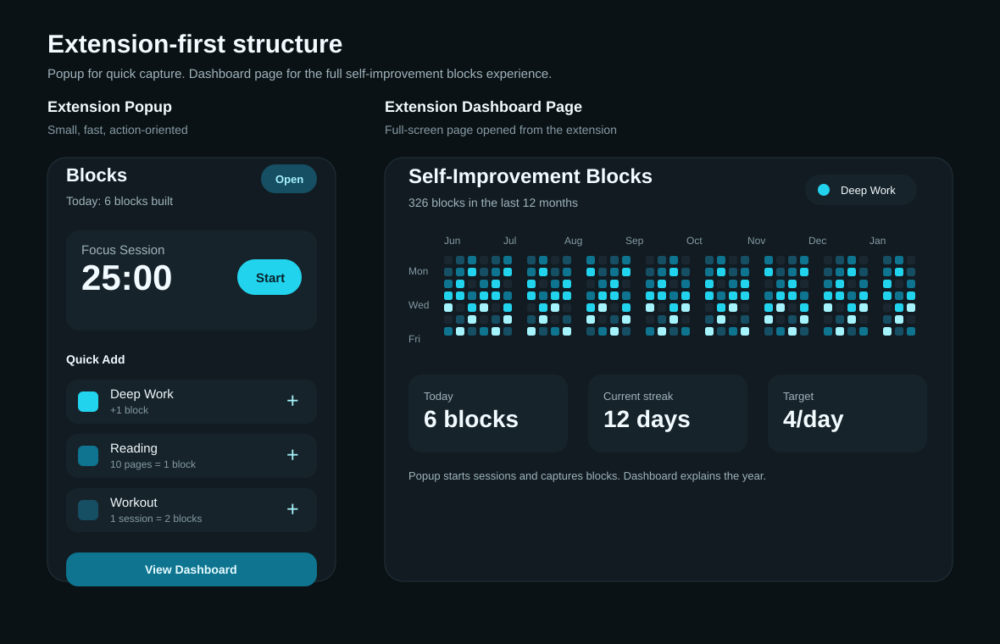

em desenvolvimento ativo

O PangoFlow é uma extensão de navegador (Manifest V3) escrita em ClojureScript para acompanhar hábitos de autodesenvolvimento. A ideia é fugir da lógica frágil de "streaks": cada esforço vira um Block, e os blocos acumulados formam um heatmap de contribuição que torna o progresso visível ao longo do tempo. O popup serve para captura rápida no momento; o dashboard é para revisar e configurar.
Mais do que uma extensão, o PangoFlow é um exercício deliberado de design de domínio. Antes do código, defini uma linguagem ubíqua e um PRD de MVP, e a arquitetura foi montada para manter as regras de negócio isoladas da UI e do navegador, testáveis em ClojureScript puro.
activity, entry,
block-rule e category não sabem que existe React, popup ou navegador. A UI apenas
consome esses módulos.
entry->blocks) esconde a
conversão de esforço em blocos para os três modos de medição (completion, count, duration), com blocos
fracionários internos e blocos inteiros na interface.
unsafe-eval), usando release bundles do shadow-cljs em vez dos bundles de dev.
Cada módulo de domínio tem seu arquivo de teste correspondente. Os testes verificam comportamento pelas interfaces estáveis (dadas atividades, entries e regras, o sistema devolve os blocos, totais diários e células de heatmap esperados), sem depender de helpers privados ou de detalhes de implementação da UI.